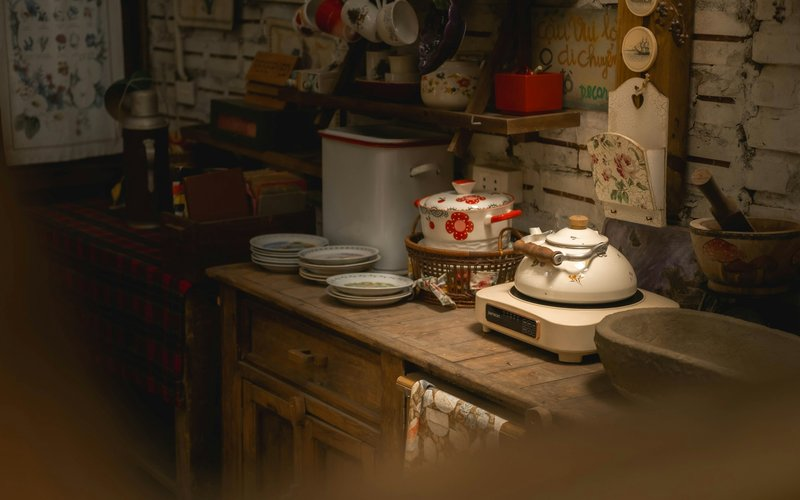

Most meal planning advice starts with a blank grid and the question "what do you want to eat this week?" That's the wrong question. It's why most people try meal planning once, spend two hours on Sunday finding recipes and writing lists, and never do it again. The right question is narrower: what do you already have, what's about to go bad, and what can you make from it?
39| 40|
41| 42|This is called backwards meal planning, and it's the only version that consistently works for people with jobs and kids and lives that don't revolve around a kitchen. Here's how it works.
43| 44|The backwards method
45| 46|-
47|
- Check what you have. Before you even think about recipes, open the fridge and pantry. What needs to be used? Half a cabbage, three carrots going soft, chicken thighs that hit their sell-by date tomorrow. These are your starting ingredients — not an afterthought. 48|
- Write meals around those ingredients. Half a cabbage plus carrots plus chicken thighs equals a stir-fry or a soup. You don't need a recipe — you need a direction. The chicken thighs with cabbage and carrots, cooked how you like them. That's dinner for two nights. 49|
- Fill the gaps. Now you have two meals. You need five or six for the week. Add two that use pantry staples — pasta, rice and beans, a frittata from whatever eggs and vegetables are left. Add one flexible slot for leftovers or takeout. That's your week. 50|
- Shop the list — and only the list. You know what you need because you built meals around what you have. The grocery list is short. You're not wandering aisles hoping inspiration strikes. 51|
Why most meal plans fail
58| 59|-
60|
- They start with recipes instead of ingredients. You find five beautiful recipes, buy everything for them, spend two hours cooking on Sunday, and by Wednesday you're tired and the cilantro is slime. Recipes should serve your pantry, not the other way around. 61|
- They're too ambitious. Nobody cooks seven new recipes a week. Nobody. Plan for two or three actual cooking sessions and let the rest be leftovers, pantry meals, and "eggs on toast" nights. Those count. 62|
- They don't account for reality. Tuesday you're tired. Thursday the kid has a thing. Friday you want takeout. There should be space in the plan for all of this. The plan isn't a contract — it's a fallback for when you don't have a better idea. 63|
The Kitchen Planner Bundle puts this method into a reusable format — weekly meal grids, grocery lists organized by store section, a pantry inventory tracker so you know what you have, and a freezer log so nothing gets lost behind the peas. Designed to work with the backwards method described here, or however you prefer to plan.
71| Kitchen Planner Bundle on Etsy → 72|